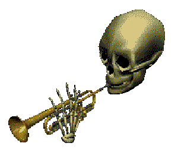
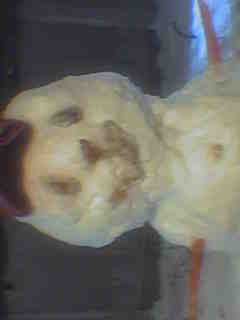
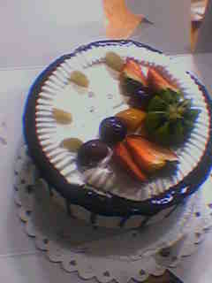
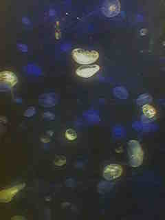
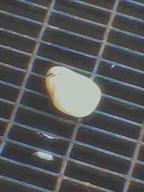
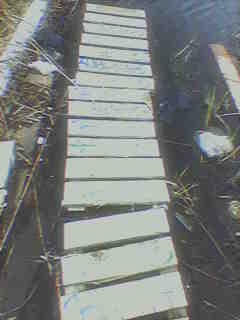
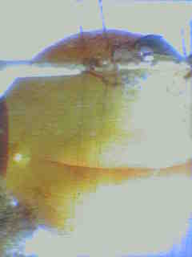

About me
Age: 9
birthday: January 17th 1992
age: 9
birthplace: Georgia
location: brooklyn new york
best friend: joe from shcool!(shcool is not cool!!!!)

favorite color: red!


|  |
Age: 9 birthday: January 17th 1992 age: 9 birthplace: Georgia location: brooklyn new york best friend: joe from shcool!(shcool is not cool!!!!)
favorite color: red!
|
|
siblings: one younger brother


food: pizza and french fries
movie: STUART LITTLE and the parent trap!
fmaily member: my brother he is so funny
albums: dookie by Green day


 BOO!!!!!!!!!!!!
BOO!!!!!!!!!!!!
My apologeez if I fritened you. I promise there is no more scares up ahead.
See!!! what did I say??
Journalexplaining: Ms Grahmn said we have to make a journal for codeing class and she taught us how to use html to make a cool page and add pictures. she said it is good to make one jornal a week and she will see them after one year to make sure we are working hard. i have to put a date and title for all the entries that I do so she knows that I did it for real. july 2: Ms grahmn said it would be hard to see the words on my pizza so I need to make a dark back ground for the words so I made beach balls on the dark back ground july 4: I will write one extra journal for this week for july 4 when we won the american revolution against the british. Today I ate a hot dog and ate steak and french fries and one coke. Later when I was playing in the grass and I scrapped my knee really bad it had a bunch of blood and I cried but my dad said that boys don't cry and he helped me feel better. july 15: Ooooooooops I already forgot to write for last week and almost forgot this week. Today I went to code class and I played with my brother. We went to the blockbuster with my dad because we are with him in the summer and we rented the goonies but it was late so we cannot watch the movie until tomarow. july 16: Goonies is so funny!!!! I watch it like 2 times!! and then dad said I needed to go do something else or I will have to wear glasses like my cousins so we went to the pool. july 23: Ms Grahmn said I need to have a schdule for my journal so we choose for me to always do it at monday. Today was more codeing we looked at some java script and we will work on it more over the week. It is not too bad so far there are these variables that can be equal to things like a = 1 even though they are not actually the same it just means a is now equal to 1 for the computer really amazing stuff I don't know how they thought of that. jul 30: Almost the end of july wow. In August dad said we are going to go kayaking in the river. I have never been kayaking before and our friend lin is going with us. It is good he is skinney so the boat will not fall over. august 7: Only one day late! Codeing class ended anyways so Ms Grahm does not even know that until next year but I am keeping up with my journals anyways I am such a good student!! august 12: We were suppose to go to kayaking today but something happened and dad was on the phone all day so I just played outside with my brother and then some pokemon red. august 20: we went kayaking! it was really cool and fun we caught a fish with our hands but we caught it with a fishing rod first from the boat, and then dad cooked it on the stove. I think joseph ate one of the bones though. august 27: summmer is almost over ughhhhhhhhhhhhhhhhhhhh. Today I didnt do that much all day. Dad was at work and I dont like staying with him at work because at the restaurant nothing happens and it is super boring and everyone that works there is old and speaks chinese and even though my chinese is okay it is not good enough to talk to them because they have old people chinese wisdom. august 31: TOMORROW I HAVE TO GO BACK TO NEW YORK NO. sep 1: At least yesterday we went to six flags and I got on one of the big coasters that go in a circle and all around and stuff called the mind bender or something it was really green but i think my mind was certainly bended. sep 6: BACK TO SCHOOOL NOOOOOOOOOOOOOOOOOOO! but i get to see Joe so it's kind of okay :) sep 10: Literally nothing happened today literally I don't know if I can name one thing that happened today. That's not METAPHORICALLAy me saying that. I just learned that word metaphorical sep 11: something happened today, the prinsepal let us out of school today and i had to walk home but that's okay because I only live 10 mins away from school but when my mom came home from work she didnt talk to me and went to bed and i had to make dinner myself and joseph because we are hungry. My friend said that something happened in Manhatten today. sep 12: mom didnt wake up today and i took my brother to school but none of the doors were open and the nice police lady said that they are not open today. For dinner tonight I made rice and meat and the long green vegetable that's the one that I like when mom makes it. We watched ultraman on the tv. There was some leftover but mom said she does not want to eat. I bring her hot water and she drinks it. sep 17: I was doing math with my pencil (big multiplication) when I pressed too hard and the lead flew into my eye!!! It stung my eye a lot it really sucked. Mrs. Ng said to go to the nurse so I went with Joe and the nurse helped me wash my eye and it was really red and I was blinking alot. They called my mom which I didnt want them to do but they have she said and when I got home I got in trouble. sep 24: There's a small grocery store near the school and they sell chips which I like to eat. I like the Andy's Hot Fries and the guy is very funny looking! He has a funny nose and hat. It reminds me of Mario. The spiciness makes my eyes cry though like when I cut onions. sep 30: Hi October. oct 1: Bye September hhahahah hehhehehe Octover 2: That other one wasn't really a real journal entry so I have to write a real one now. Uhhhhhhhh I'm trying to figure out what the numbers in the top left of the tv mean when I am watching ultra man. I know they are not the time because it is not the correct time as here and they use numbers over 12. Ultraman flipped that giant bug today, it was very cool. In my opinion bugs are kind of gross so I wouldn't flip a bug, especialy if it was giant because it is bigger and more gross. Octover 3: Ok so I talked to Joe and he said that small bugs are actually worse because when they are smaller there are a lot more of them but I reminded him of when we watched nausica of the valley of the wind and there are big bugs but (alliteration!) there are like one million of them still but then he said that there can be a bug on you or all in one small spot that they shouldn't be and you wouldn't even know and that was so gross I almost threw up my milk. I hate bugssss sometimes they show up in my house like cockaroaches and they are so scary I have to kill all of them. october 8: chicken butt chicken buttchicken buttchicken butt october 8: Is that allowed? or is butt a bad word. I know my mom really doesn't like it when I use the f word though even though sometimes the kids in my after school say it all the time. It's literally just a word plus they say it all the times in but with a chinese accent so it's always kind of funny because they using the whole word with the ing for some reason. October 15: So we are playing pokemon in the lunch room and I don't remember the pokemon but my friend Emily has a pokemon with a sleep move and it has 60 hp and my pokemon cannot do 60 hp in one hit so she kills two of my pokemon with just one sleep move! The sleep is so op I don't know how to win against it when my pokemon only has a 30 attack ability and it keeps falling asleep all the time. October 16: My favorite pokemon is typhlosion he is so cool and big. And smeagle his tail is cool. October 24: Ok so I forgot to do it earlier this week BUT that is because I had one million homeworks to do so it's not really my fault also I was reading harry potter. BUT ALSO Joe got an Ipod!!! and we were listening to music on it during recess until the teacher took it away. He said his dad works at the apple store but I didn't know that until now and we were listening to a kiss album called dienasty or something. I never heard of them before but Joe said his parents really like to kiss which I thought was talking about something else and I was confused why he said that but is really about the band. October 31: I GOT SO MUCH FREAKING CANDY AHHHHH. Me and Joe and and MIke and Caleb went to Tom's house also for a sleep over and to eat lots of candy. His dad has a lot of vhs tapes so we were watching lots of movies like the thing from john and also psycho. They were pretty spooky but I think I liked psycho more, the story is really cool and I think it is super cool that the main character dies before the movie is even over. November 2: I forgot to say my favorite candy which is the reeses cup PEANUT BUTTER IS SO GOOD I AM SO HAPPY I DONT HAVE A PEANUT ALLERGY LIKE TOM. Because of that I ate all my reeses cups before I went over and even washed my hands and mouth but then I ate more candy and I didn't have much space for popcorn. I didn't want to admit this but all of us were crying during the thing is was really scary! November 7: Mom gave me money to go to mcdonalds! She said she has a headache so I got some french fries, I like the french fries. Joseph had a happy meal because he is a baby and I am not, and he got an ugly green guy from that monster movie I didn't see yet but I think we are going to see it soon with my friends. His name is Mike like my friend heheheheh. Novemmber 17: I like going to the mall afterschool with my friends so I can listen to the christmas song I really love that song it never gets old and she is so happy when she sings it. ALso I forgot to say this but I watched Monsters Inc! I feel bad for calling Mike ugly now and when I pointed to him on screen and told my friend that was him. It was a really good movie, I did not see that plot twist coming at all that was so cool and I like the abominanble snow man guy thats what Caleb said he's called I forgot. November 24: Saturdays I usually go to art class I used to really like art class because I got to draw cool things but when I got placed outside with easels and I don't get to use color anymore and there's all this shading and stuff which I don't get. Sometimes I have to paint and I don't understand the colors it makes no sense I miss the crayons. November 30: It's almost Christmas!! I lovveeee it when it snows, even the yellow snow hahaha ehheheh. It hasn't even snowed yet I just cannot contain my excitement!!!! Plus my auntie said she is inviting us over for Christmas. December 1: It's CHRISTMAS! Just kidding it's obviously December 1st. December is the best tho because we have break and I really need this break from school, dinner is so time consuming to make. December 12: Even though this is the month that it is supposed to snow I like that it can still be warm. It makes getting groceries a lot nicer. Plus I get to spend a lot of time with my brother and buy a lot of snacks and do a lot of walking! We like to talk about tv shows and imagine what dad is doing at his house. One time he was watching jurrasic park but I didn't feel like watching but it seems really cool it has dinosaurs in it. December 20: I was trying to figure out my english homework I had to read this scholastic magazine about the dangers for middle schoolers Ms. Conners said and I don't think she was kidding there were some big words in there like plumage what in the word is a plumage like plumbing?? Bird bathroom? WHY ARE WE EVEN READING THIS ITS ALMOST CHRISTMAS DO THEY NOT HAVE ONES ABOUT CHRISTMAS AND STUFF ITS NOT BIRD SEASON. December 25: CHRISTMAS IS HEREEEEEEEEEEEEEEEEEEEEEEEEEEEEEEEEEEEEEEEEEEEEEEEEEEEEEEEEEEEEEEEEEEEEEEEEEEE. IF YOUR WONDERING HOW I WROTE THIS WHILE BEING AT MY AUNTS HOUSE ON A GOOD OL FASHIONED PENCIL AND PAPER. WE ARE WATCHING A CHRISTMAS CAROL ON THE TV THERE ARE ALOT OF US, JIMMY, HUANG, CHO, KIMMY, XIN, CHU, GINNY, MY BROTHER, TROY FROM CLASS BECAUSE HIS PARENTS ARE OUT OF TOWN BECAUSE HIS GRANDMOTHER IS SICK SO HE'S STAYING WITH ME FOR NOW BECAUSE MY MOM SAID SOMETHING WHEN I ASKED HER, AND DIDNT SAY ANYTHING WHEN HE CAME OVER SO HE JUST SLEEPS WITH ME AND WE DO HOMEWORK TOGETHER. HIS PARENTS ARE COMING BACK A COUPLE DAYS AFTER NEW YEARS THEY SAID. DECEMBER 25: THIS IS PART 2 but not in caps because I calmed down now but Auntie said mom said we can't stay so we went back home. We were gonna walk back but Auntie said no for sure and drove us back even though it's only about 10 blocks. On the ride over she said dad called her to tell her that my present was coming in the mail soon, I am so EXCITED!! She also said that mom would get better soon but when I asked if mom is sick she didn't say anything man I have no idea what she is talking about. December 31st: new years eve! I usually get really tired before 12 am so I can't stay up but we built a snowman today because it snowed sooooo much yesterday it was so crazy! Here is a picture I took on my phone that dad bought me when we went over for summer I forgot this thing can do that its so cool. I also helped my uncle shovel the front of our house but he did a lot better than me, then we had hot choco uncle is so nice! January 1st: Happy New Years! It's 2001! Woooooo it's going to be my birthday soon! School tomorrow T-T WAIT I FORGOT TO DO MY WINTER BREAK HOMEWORK January 2: Oops I meant it's 2002. Anyways we are back to class again. Saw Joe he brought me a souvenir from Hawaii he bought me a funny refrigerator magnet of a guy surfing so I put it on the refrigerator. January 14: Mom cooked today. January 17: Auntie bought me a cake :D and we had a little birthday party. The cake was super yummy!  If you're wondering why there are no pictures of me DON'T THAT'S WEIRD I AM PRACTICING INTERNET SAFETY. January 20: OH MY GOD ITS A PS2 AND A GAME CALLED HALF LIFE January 22: This game is kind of scary but it's super fun there a lot of bugs and aliens but it is really hard to hit them because they are jumping so much so I like shooting people more. January 24: MOM CAME OUT UHER ROOM FOR ONCE AND SHE SAW ME PLAY TH EGMAE AND THE BAD GUY I SHOT HIM NAD SHE SAID THAT THE GAME IS TOO VIOLENT AND TOOK IT AWAY THIS IS NTO FAIR I HATE HERE March 12: Mom took the entire computer too after I wrote that but she didnt read what I wrote because her english is not so good. Mom said I would get it back back in febuary and when I asked her why she yelled at me that she forgot and said she owuld take it again so I didn't say anything. March 30: Sorry Ms Grahmn I didn't really want to journal too much recently. I don't have any games for my playstation now so I don't have anything to do with it. The other day auntie took me to a musuem with her kids it was cool there were lots of things to play with on the wall and many words and I saw jellyfish.  March 31: She said it's not my fault. I don't know what she is talking about. April 11: Kim brought some of her dvds and she came over to watch them and they can go in the ps2 sp its pretty nice since for our tv we only have the vhs player and we have a lot of those so they take up a lot of space but the dvd is so cool there are so many menus that are so pretty! We watched Men in Black and space jam and she even showed me that there is a space jam website. I can even link it it's so cool to learn about all the things they thought when they were making the movie. space but my favorite page is this one production they are thinking so hard about everything its so cool and thoughtful. After the movies Kim left but she left the dvds, she said she will be back for them. April 25: Kim came over again! She just bought Forest Gump today. We also went to the blockbuster to look for a movie to rent because they have a blockbuster membership but we didnt find one that we wanted and all she did was she kept picking up the mask dvd and doing the face. After we finished the Forest Gump she asked if I wanted to see a real cool movie next time! And of course I said yes Who doesn't??? She said the movie would have a lot of action and stuff and only grown ups are alowed to watch it at the movies and at home, but her parents let her watch them! April 28: it rained a lot today. I didn't know what to do today. I mostly spent time with my brother chilling around the house. I want to go out to play in the rain but I don't want to get soaked and get yelled at. I drew something but I don't want to share it. I did a little bit of surfing on the web, and did some iming. i am a poopy butt face HEHEHEHEHAHAHAHI DID NOT WRITE THAT KIM WONT LET ME DELETE IT OR TOUCH IT May 4: Found a potato on the way to the grocery.  May 11: This time she brought an R RATED MOVIE CALLED FIGHT CLUB. Apparently her parents watch all kinds of grown up movies with her so they have a lot of them around, but we watched the movie and there was so much f words and blood and punching and stuff I guess that's why they call it fight club. BUT OH IM NOT SUPPOSED TO TALK ABOUT IT. SOooooo uh we didn't do anything today, probably picked our noses or something. I am 10 years old that's what I do. May 12: I HAVE TO STUDY FOR MY ELA AND MATH EXAM NOW THEY ARE THIS WEEK I TOTALLY FORGOT May 17: I was trying to avoid her but she found me and asked me how I did on the tests. I think I did good. She doesn't believe me I know. Everytime I sit at the computer I feel like she might show up out of nowhere. May 18: She was in my room I can tell May 25: We watched Ferris Bueller's day off at Kim's house today. Joseph really liked the movie. June 1: Every week I will write one like I said but I really don't want to anymore. June 6: It rained a lot.  June 15: Ten days until summer break starts and I go down for the summer. I kind of don't want to but I also at the same time do want to. June 22: We went to the library because it was pretty hot outside. I read Danny and the Champion of the World. I really liked it. Kim had a book called Where the sidewalk ends it has poems in it but I don't really get them. Joe fell asleep because he was being annoying the entire time but it didn't break me and he got tired. June 26: Last day! I picked up Joseph from afterschool and walked home with him. Mom left suitcases in our rooms. June 29: Georgia is even hotter than New York and the bus really sucked. Big butt  BUT WE ARE BACK AND WE ARE IN ACTION I GOT THE COMPUTER SET BACK UP IN THE COOL ROOM. Ms grahmn doesn't work here anymore. July 7: I talked to Kim for a long time on the phone. It is too hot to do anything. I didn't say that much I think. She just kept talking about movies. It was nice. September 4: School started again. I am in the fifth grade now. It's not so bad here. October 19: Mom is a little bit back to normal now. She cooks food again and she says hi to me when I come home but she always looks at me strong. And asks me who I love more but I dont want to answer that question so I tell her Joseph and I hurry away. December 25: Mom let dad come to New York for christmas and the winter break so he was cooking all day our food and during dinner all the adults were talking and I was eating at the table and my dad asks me who I love more and everyone looks at me and laughing and my dad is laughing and I cried and he said he was sorry and he said boys aren't supposed to cry. |